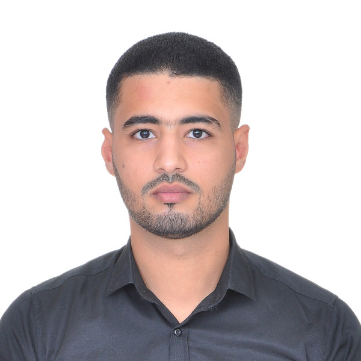

ABDELHAMID BELLKASEH

Date of Birth: 28/08/1998
SUMMARY
As a Claims and Assistance Officer at Africa Assist, I manage claim file follow-ups, guide insured clients, and handle complaints. My role also includes providing assistance services tailored to the insured's needs.
PROFESSIONAL EXPERIENCE
Claims and Assistance Officer
AFRICA FIRST ASSIST
October 2020 - Present
- Manage claim declarations and follow up until resolution.
- Guide and support insured clients through their procedures.
- Provide assistance services (towing, replacement car, etc.).
- Collaborate with various departments to ensure fast and efficient compensation.
Accounting Assistant
ECOGEA SARL
November 2018 - March 2019
- Organize and file invoices..
- Enter daily operations and payroll.
- Perform bank reconciliations and prepare VAT files.
EDUCATION
Bachelor's Degree in Economics and Management
Faculty of Legal, Economic and Social Sciences, Ain Sebâa
2017 - 2018
High School Diploma in Experimental Sciences (Physics-Chemistry Option)
Lycée Chahid Driss Lahrizi
2014 - 2015
KEY SKILLS
- Claims Management: Expertise in file tracking, complaints handling, and problem-solving.
- Stress Management: Able to work under pressure while maintaining service quality.
- Communication: Clear and simple explanation of procedures to clients.
- CRM Tools Proficiency: Advanced use of claims and assistance management software.
- Active Listening: Quick understanding of needs and appropriate solutions.
LANGUAGES
- Arabic ⭐⭐⭐⭐⭐
- English⭐⭐⭐⭐
- French ⭐⭐⭐⭐
INTERESTS
Hobbies
Contact Me